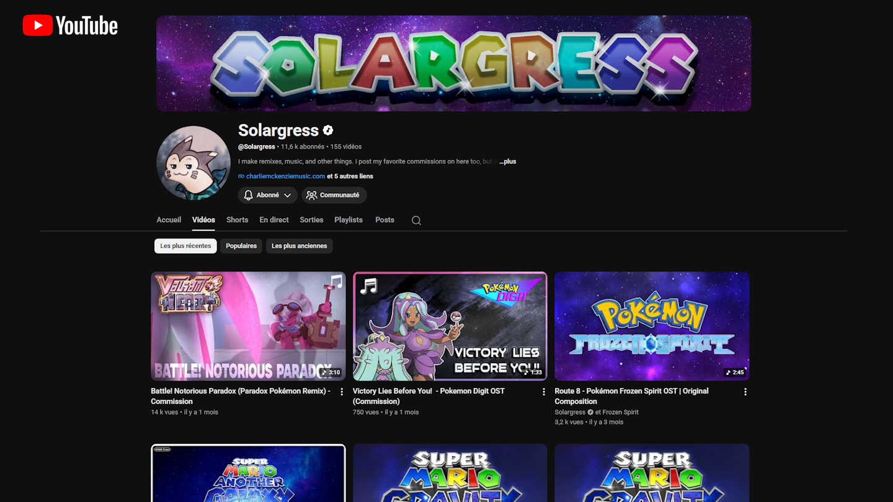
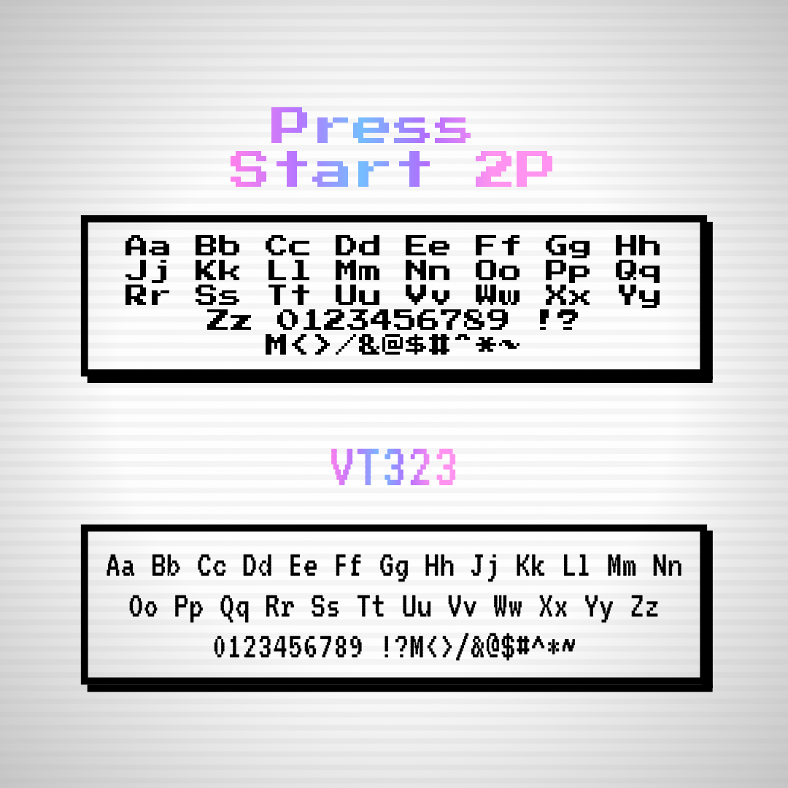
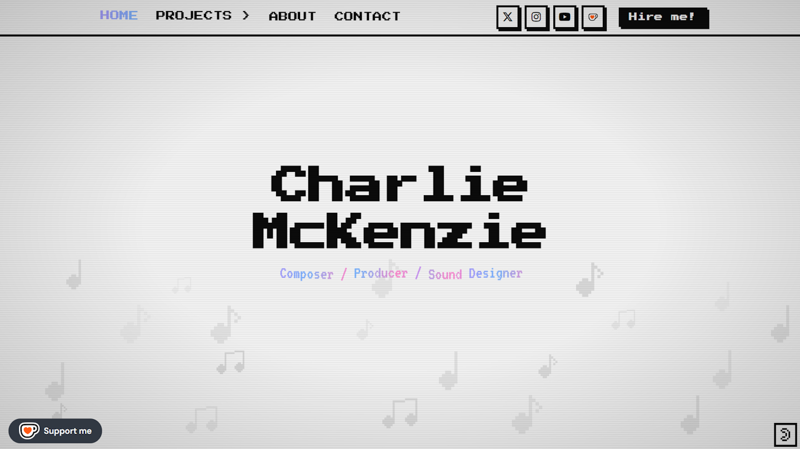
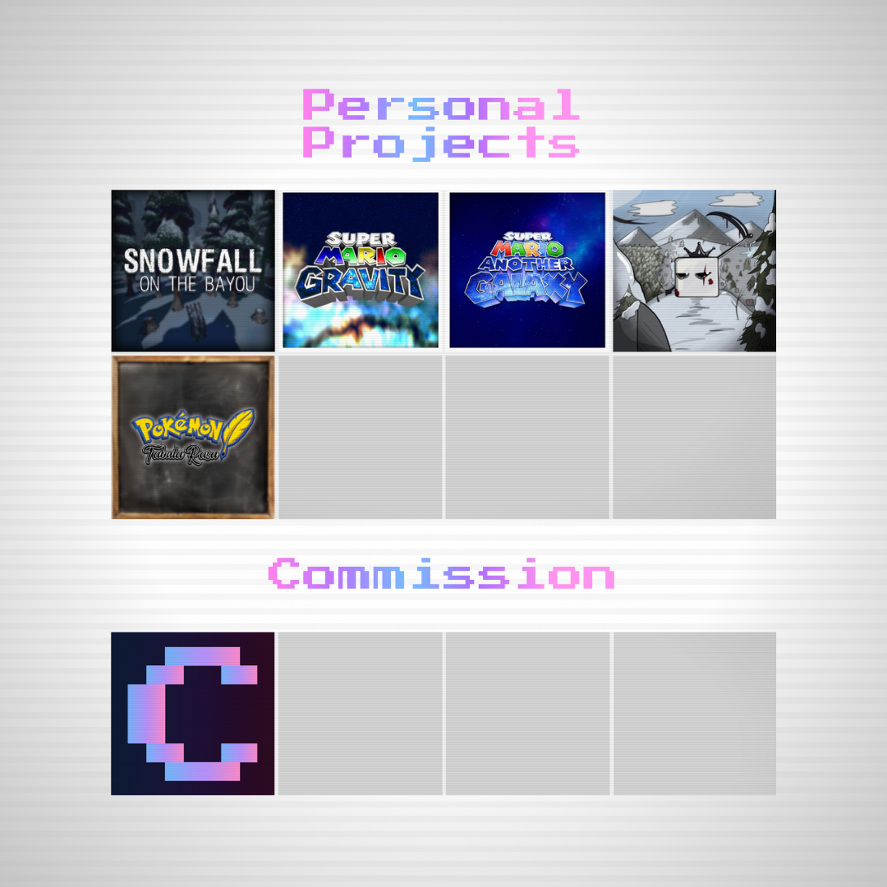

Charlie McKenzie is a composer, producer and sound designer specializing in retro and nostalgic game music:
original compositions, remixes, and scores for indie game projects. He shares his work on YouTube, where
he has built an audience around that sound. He needed a portfolio site where potential clients could
discover, hear, and commission his work.
He reached out because he knew my work. After a call, the
direction was clear: something truly new that still felt familiar. Not retro as a costume, but retro as a
language. I built the site from scratch: concept, visual identity, copy, and frontend.
Nostalgia is not a style. It’s a feeling. The job was to make a modern site that made you feel something old.
Most retro-themed portfolios borrow the visual codes superficially: a pixel font here, a dark
background there, some neon. The result usually reads as aesthetic-chasing rather than genuine
identity. For a composer whose entire brand is built on that sound being real, the site had to
feel earned.
The brief from Charlie was: something new and authentic that recalled nostalgia.
That meant building a design language from the inside out, one where every choice had a reason
rooted in the era being referenced, not just borrowed from it.

The concept: a monochromatic old-computer aesthetic with a modern face. The typographic backbone
is two fonts that carry the whole era. Press Start 2P for headings and
interactive elements, the canonical arcade pixel font. VT323 for body text,
a direct reference to the VT100 terminal, early digital text at its most raw.
Both are
monospace. The entire site reads like something that could have existed on a CRT monitor in 1989,
but composed with 2026 spacing, hierarchy, and layout discipline. The base palette is near-black
on off-white, monochromatic, the exact anti-thesis of decorative retro. Color appears only as
a gradient accent: blue into purple into pink, an 80s neon arc applied with restraint.

The site has three layered CRT effects: scanlines (repeating horizontal bands at low opacity),
a subtle flicker via radial gradient animation, and chromatic aberration on key elements.
Combined, they add just enough authentic monitor noise to feel grounded without becoming
distracting. The effect reads immediately to anyone who has ever used a CRT, and reads as
interesting texture to anyone who hasn’t.
Section headings animate letter by letter:
each character floats on a staggered vertical cycle while its color shifts through the gradient.
Buttons press physically on click, translating two pixels down and right with the shadow
shrinking to match, the exact interaction model of an arcade button.

The portfolio splits into two tracks: personal projects (original compositions, remixes, YouTube
work) and commissions (client scores, game music for hire). Both live under the same Projects
route but are separated by source parameter, so each audience lands on content framed for them.
The homepage holds both in view and lets the visitor self-select from the first scroll.
Three service propositions anchor the commission pitch: music that fits, clean mixes, fast
delivery. Written to address the specific doubts a commission client has before reaching out.
Every page ends with a direct contact call to action with no friction between interest and reply.

A fully custom composer portfolio with a design language built from first principles around a specific
era: pixel fonts, CRT layering, flat arcade shadows, monochromatic base with a single neon gradient
accent. Every visual decision is justified by the reference, not borrowed from it.
What it proved:
designing for a creative client means understanding what they sound like well enough to make something
that looks like it. The brief was authenticity. The output was a site that earned its aesthetic rather
than wearing it.